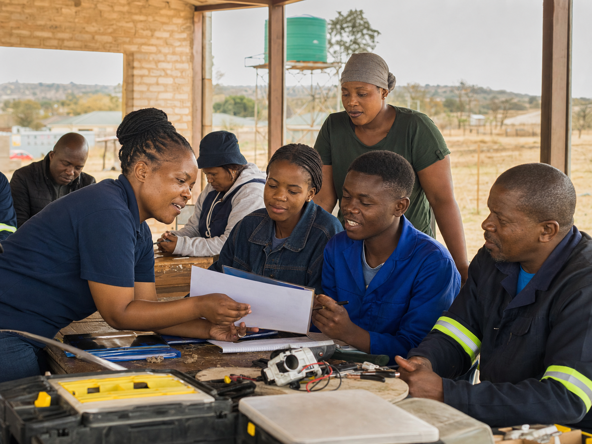
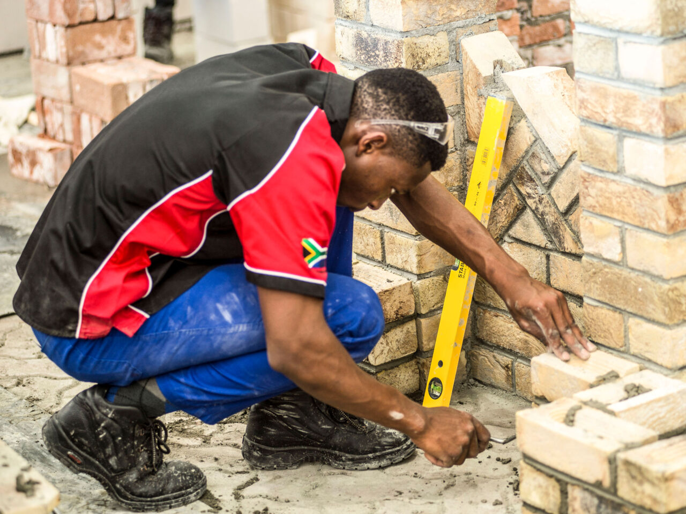
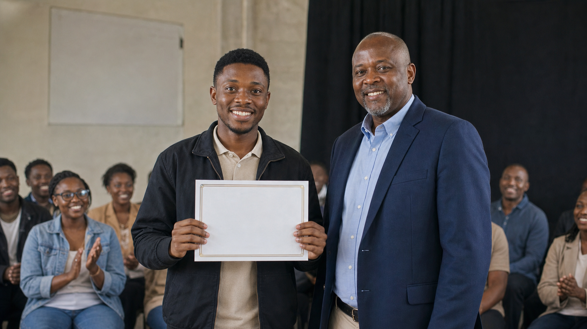
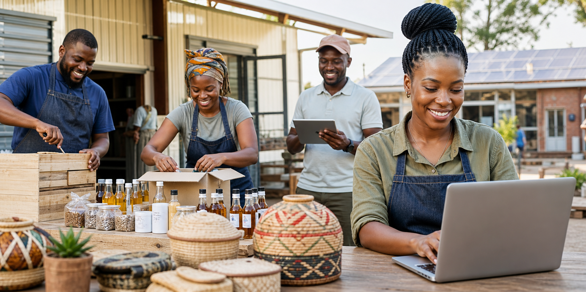

About Us
Batshas Holdings and Enterprises (Pty) Ltd is a private company with headquarters in Morokweng, North West. We are dedicated to driving local development through structured skills upliftment, enterprise incubation, and community-focused initiatives.
Building Skills. Growing Communities.See More...Why Choose Batshas?
We do not just train - we transform. Through vocational training, entrepreneurship mentorship, digital literacy programs, and community-driven projects, we equip people with the tools they need to succeed in today's economy.
- Accredited & Relevant Training
- Local Impact, Lasting Change
- Partnership-Driven Approach
- Focused on Inclusion & Empowerment
Together, we are not just building skills - we are building futures.


